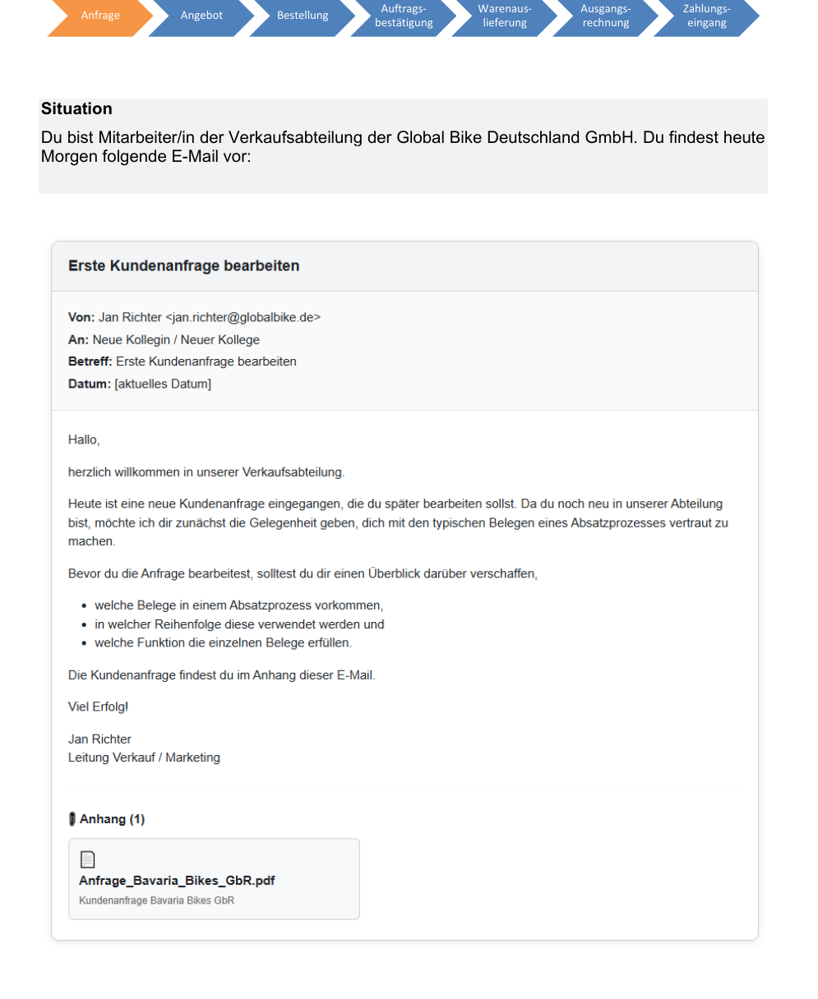

Kundenfall und Organisationsdaten erschließen
Lies die interne E-Mail und die Originalanfrage in M1. Erstelle drei getrennte Fallköpfe und kläre die Bedeutung von DS01/EH/ZU und DN01/GH/ZU.
Notizen


Ob ein Auftrag abgeschlossen ist, erkennst du am Zusammenspiel von Vertrieb, Versand und Buchhaltung. Eine Rechnung kann bereits gedruckt sein, während die Forderung noch offen ist. Bei Global Bike verfolgst du drei Kundenaufträge im SAP-Schulungssystem bis zum Zahlungsausgleich.
Drei ausgefüllte Verkaufslaufzettel, je einer für Bavaria Bikes, Drahtesel und Alster Cycling. Jeder Laufzettel enthält die fallbezogenen Organisations- und Artikeldaten sowie die tatsächlich erzeugten Belegnummern. Die Bearbeitung umfasst in jedem Fall den kompletten Vorgang bis zum abgeglichenen Zahlungseingang.
Du entscheidest, welche Aufgaben du selbstständig oder mit anderen bearbeitest. Für die Rückmeldung erhält jede Person ein fremdes Produkt.
15 MinutenDie Gewichtung zeigt, wie häufig und wofür die Kompetenz in den Aufgaben gebraucht wird. 1 bedeutet „kurz in einer Aufgabe“, 6 „von der Vorbereitung bis zur Auswertung“.
| Kompetenz | Gewicht (1–6) | Was übe ich? |
|---|---|---|
| F · Fachkompetenz | 6 / 6 | Ich führe drei vollständige Absatzvorgänge in SAP S/4HANA bis zum Ausgleich der Forderung durch. |
| P · Personalkompetenz | 5 / 6 | Ich prüfe Stammdaten, Mengen, Preis und offenen Posten, bevor ich den nächsten Schritt buche. |
| S · Sozialkompetenz | 4 / 6 | Ich dokumentiere die Übergaben zwischen Verkauf, Versand und Buchhaltung so, dass eine andere Person den Vorgang prüfen kann. |
| M · Methodenkompetenz | 6 / 6 | Ich verknüpfe Folgebelege mit ihren Vorgängern und gleiche Laufzettel und Belegfluss ab. |
| D · Medienkompetenz | 6 / 6 | Ich nutze das SAP-Schulungssystem, die passenden Prozessanleitungen und die Beleganzeige zur Kontrolle. |

Jan Richter, Leiter Verkauf und Marketing der Global Bike Deutschland GmbH, begrüßt dich in der Verkaufsabteilung. In seinem E-Mail-Anhang liegt die Anfrage der Bavaria Bikes GbR über 100 Wasserflaschen. Zuerst sollst du die Belege in die richtige Reihenfolge bringen und ihre Aufgaben erklären. Anschließend bearbeitest du den Vorgang im SAP-Schulungssystem.
Für Bavaria Bikes gelten im Originalfall die Verkaufsorganisation DS01, der Vertriebsweg EH, die Sparte ZU und das Werk Heidelberg HD01. Später kommen zwei eigenständige Fälle hinzu. Drahtesel e.K. benötigt zehn Verbandskästen, Alster Cycling e.K. zwanzig Fahrradcomputer Basic. Für beide Übungsfälle gelten DN01, GH, ZU und das Werk Hamburg HH01.
Dein Auftrag ist die vollständige Bearbeitung aller drei Absatzvorgänge. Führe je Vorgang einen Laufzettel mit den tatsächlich erzeugten Belegnummern. Prüfe abschließend im SAP-Belegfluss die vollständige Lieferung, die dazugehörige Rechnung und den Ausgleich der Forderung.
Lies die interne E-Mail und die Originalanfrage in M1. Erstelle drei getrennte Fallköpfe und kläre die Bedeutung von DS01/EH/ZU und DN01/GH/ZU.
Notizen
Ordne in M2 die sieben Arbeitsbereiche. Erkläre an zwei Übergängen, welcher Vorgänger für den Folgebeleg gebraucht wird.
Notizen
Öffne die Laufzettel in M1, M3 und M4. Plane, wann du Stammdaten nachschlägst, Belegnummern sicherst und die Systemwerte vergleichst.
Notizen
Lege mit M5 für jeden Fall Prüfpunkte vor Warenausgang, Faktura und Zahlung fest. Notiere, bei welcher Abweichung du vor der nächsten Buchung Rücksprache hältst.
Notizen
Drei ausgefüllte Verkaufslaufzettel, je einer für Bavaria Bikes, Drahtesel und Alster Cycling. Jeder Laufzettel enthält die fallbezogenen Organisations- und Artikeldaten sowie die tatsächlich erzeugten Belegnummern. Die Bearbeitung umfasst in jedem Fall den kompletten Vorgang bis zum abgeglichenen Zahlungseingang.
Begründe, ob du vorrangig vom Beleg, von der Prozessstation oder vom nächsten Prüfnachweis ausgehst. Alle drei Zugänge umfassen jeden Kundenfall und dieselben drei Laufzettel.
Notizen
Drei ausgefüllte Verkaufslaufzettel, je einer für Bavaria Bikes, Drahtesel und Alster Cycling. Jeder Laufzettel enthält die fallbezogenen Organisations- und Artikeldaten sowie die tatsächlich erzeugten Belegnummern. Die Bearbeitung umfasst in jedem Fall den kompletten Vorgang bis zum abgeglichenen Zahlungseingang.
Nutze die sieben Originalbelege und die gleich nummerierten SAP-Anleitungen in M2. Prüfe den Vorgänger vor jeder Anlage und trage die vergebenen Nummern unmittelbar in Laufzettel 1 ein.
Rechenweg · 5-mm-Karo
Führe mit M3 alle sieben Schritte für zehn Verbandskästen durch. Beachte die aktualisierten Termine und die Zahlungsmitteilung. Vergleiche den offenen Posten mit deiner tatsächlichen Rechnung.
Rechenweg · 5-mm-Karo
Prüfe für jeden Laufzettel, ob du vom eingegangenen Kundenbeleg über die jeweiligen Ausgaben bis zum Ausgleich gelangst. Verwende Belegnummern als Nachweise.
Rechenweg · 5-mm-Karo
Folge für jeden Laufzettel der SAP-Belegkette von Vertrieb über Versand bis Rechnungswesen. Kontrolliere die Vorgänger- und Folgeverknüpfungen.
Rechenweg · 5-mm-Karo
Kontrolliere nacheinander Organisationsdaten, Menge, Wert und Zahlungszuordnung der drei Vorgänge. Nutze den Status, um fehlende Buchungen von falsch zugeordneten Belegen zu unterscheiden.
Rechenweg · 5-mm-Karo
Bearbeite mit M4 den gesamten Vorgang für 20 Fahrradcomputer Basic. Kontrolliere Nettowert, Umsatzsteuer und Zahlungsbetrag. Zeige auf dem dritten Laufzettel den Ausgleich der richtigen Rechnung.
Rechenweg · 5-mm-Karo
Reiche deine Arbeit in der Moodle-Aktivität „Peer-Feedback“ ein. Verwende neutrale Titel und Dateinamen. Entferne Namen aus Text und Dateieigenschaften. Bei einem gemeinsamen Produkt reicht jede Person eine Kopie im eigenen Konto ein. Ohne eingerichtete Aktivität verteilt die Lehrkraft codierte Arbeiten.
Notizen
Prüfe die dir zugeteilte Arbeit mit den Kriterien unten. Benenne eine konkrete Fundstelle, eine fachlich gelungene Stelle und einen begründeten Verbesserungsvorschlag. Gib die Rückmeldung in Moodle oder mit dem ausfüllbaren Peer-Bogen ab. Dein Name ist für die empfangende Person sichtbar.
Notizen
Lies das Feedback zu deinem Produkt. Verbessere die genannte Stelle oder begründe am Material, weshalb du deine Fassung beibehältst. Ergebnis ist die für die weitere Verwendung geprüfte Fassung.
Notizen
Fülle die separate Aktivität „Feedback“ in deinem Moodle-Kurs aus und sende deine Rückmeldung dort ab. Falls hier kein Direktlink angezeigt wird, öffne „Feedback“ in der Kursübersicht.
Notizen
Jan Richters E-Mail, erster Kundenbeleg, Organisationsdaten und drei Laufzettel.
Arbeitsaufträge und sieben passende SAP-Schrittanleitungen zum Originalfall.
Vollständiger Übungsfall mit Originalbelegen, aktualisierten Fristen und korrigierter Zahlungsmitteilung.
Kundenanfrage, interne Konditionen, Bestellung und Zahlungsmitteilung zum Fahrradcomputer.
Kontrollfragen und Originalanleitungen für Belegfluss und Forderungsausgleich.
Alle drei Fallstrecken mit internen Sprungmarken, Belegen und Anleitungen.
69 Seiten mit allen Geschäftsunterlagen und den SAP-Arbeitsbereichen; die Lösungsseite zur Warenauslieferung ist durch einen Prüfauftrag ersetzt.
Originale bebilderte Hilfen zum SAP-Schulungssystem.
Bearbeitbare Textfassung mit den zugehörigen PDF-Belegen.
Sie sind in der Verkaufsabteilung der Global Bike Deutschland GmbH tätig. Heute Morgen finden Sie folgende E-Mail vor.
Von: Jan Richter – Leitung Verkauf / Marketing
An: Neue Kollegin / Neuer Kollege
Betreff: Erste Kundenanfrage bearbeiten
Datum: [aktuelles Datum]
Hallo,
herzlich willkommen in unserer Verkaufsabteilung!
Heute ist eine neue Kundenanfrage eingegangen, die du später bearbeiten sollst. Da du noch neu in unserer Abteilung bist, möchte ich dir zunächst die Gelegenheit geben, dich mit den typischen Belegen eines Absatzprozesses vertraut zu machen.
Bevor du die Anfrage bearbeitest, solltest du dir einen Überblick darüber verschaffen,
Die Kundenanfrage findest du im Anhang dieser E-Mail.
Viel Erfolg!
Jan Richter
Leitung Verkauf / Marketing
Original-Handlungssituation öffnen · Kundenanfrage im Original öffnen
Die Zeichen ### stehen für die persönliche Schulungsnummer. Ermittle fehlende Material- und Kundennummern aus den vorhandenen Stammdaten.
Verwende zu jedem Arbeitsbereich den Beleg und die gleich nummerierte SAP-Anleitung. Die Anleitungen können auch ausgedruckt genutzt werden.
Bavaria Bikes GbR – 100 Wasserflaschen (BOTL1###)
Bearbeiten Sie alle sieben Bereiche mit den passenden SAP-Anleitungen. Führen Sie für diesen Geschäftsfall einen eigenen Laufzettel – Verkauf.
Lesen Sie die Kundenanfrage über 100 Wasserflaschen (BOTL1###). Erläutern Sie Vor- und Nachteile eines Laufzettels. Füllen Sie dessen Kopf anhand der SAP-Stammdaten aus und ermitteln Sie die Lieferungs- und Zahlungsbedingungen. Legen Sie die Anfrage an und ergänzen Sie den Laufzettel.
Original-Arbeitsauftrag mit Belegen öffnen · Anleitung 1 öffnen
Erstellen Sie ein Angebot mit Bezug zur Anfrage (25,00 € netto je Stück, Gültigkeit ein Monat). Erläutern Sie die rechtliche Bedeutung des Angebots und prüfen Sie die Warenverfügbarkeit. Geben Sie das Angebot aus und ergänzen Sie den Laufzettel.
Original-Arbeitsauftrag mit Belegen öffnen · Anleitung 2 öffnen
Prüfen Sie die Bestellung B-21### über 100 Wasserflaschen (2.500,00 € netto). Erfassen Sie die Kundenreferenz und legen Sie den Terminauftrag mit Bezug zum Angebot gemäß Anleitung an. Geben Sie die Auftragsbestätigung aus und ergänzen Sie den Laufzettel.
Original-Arbeitsauftrag mit Belegen öffnen · Anleitung 3 öffnen
Beschreiben Sie die Schritte der Warenauslieferung und die Bedeutung der Versandstelle. Legen Sie die Auslieferung an, kommissionieren Sie die Ware, buchen Sie den Warenausgang und geben Sie den Lieferschein aus. Prüfen Sie den verbleibenden Bestand im Heidelberger Lager (MD04) und ergänzen Sie den Laufzettel. Die Lösungshinweise stehen im Originalabschnitt.
Original-Arbeitsauftrag mit Belegen öffnen · Anleitung 4 öffnen
Erstellen und prüfen Sie die Ausgangsrechnung, geben Sie diese aus und ergänzen Sie die Rechnungsnummer im Laufzettel.
Original-Arbeitsauftrag mit Belegen öffnen · Anleitung 5 öffnen
Beschreiben Sie den Geschäftsfall aus dem Originalbeleg und prüfen Sie die offenen Posten. Ergänzend zum Originalauftrag: Buchen Sie den Zahlungseingang gemäß Anleitung, kontrollieren Sie den Ausgleich und ergänzen Sie den Laufzettel.
Original-Arbeitsauftrag mit Belegen öffnen · Anleitung 6 öffnen
Rufen Sie den Belegfluss in SAP auf und vergleichen Sie die Belegnummern mit dem Laufzettel. Prüfen Sie den Abschluss des Vorgangs und erläutern Sie, warum der Vertriebsprozess überwacht werden muss.
Original-Arbeitsauftrag mit Belegen öffnen · Anleitung 7 öffnen
Alle sieben Anleitungen zusammen öffnen
Kundenanfrage · Verkaufsorganisation · Vertriebsweg · Sparte · Angebot · Kundenreferenz · Kundenauftrag · Kommissionierung · Warenausgang · Faktura · Offener Posten · Belegfluss
Lisa ist seit einigen Wochen in der Verkaufsabteilung der Global Bike Deutschland GmbH tätig. Die Verkaufsleitung überträgt ihr die eigenverantwortliche Bearbeitung einer Kundenanfrage von Drahtesel e.K. über zehn Verbandskästen. Verschaffen Sie sich zunächst einen Überblick über den Ablauf und bearbeiten Sie den gesamten Absatzvorgang in SAP.
Original-Handlungssituation öffnen · Vollständige Original-Übungsaufgabe öffnen
Führen Sie einen eigenen Laufzettel – Verkauf parallel zur Bearbeitung.
Lesen Sie die Anfrage von Drahtesel e.K. über zehn Verbandskästen. Ermitteln Sie die Stammdaten, ergänzen Sie den Kopf des Laufzettels und legen Sie die Anfrage in SAP an (Gültigkeit ein Monat). Notieren Sie die Belegnummer.
Original-Arbeitsauftrag öffnen · Anleitung 1 öffnen
Erstellen Sie mit Bezug zur Anfrage ein Angebot über zehn Verbandskästen zu 12,50 € netto je Stück. Prüfen Sie die Verfügbarkeit, geben Sie das Angebot aus und ergänzen Sie den Laufzettel.
Original-Arbeitsauftrag öffnen · Anleitung 2 öffnen
Prüfen Sie die Bestellung B-03### und erfassen Sie den Kundenauftrag mit Bezug zum Angebot. Erfassen Sie die Kundenreferenz, geben Sie die Auftragsbestätigung aus und notieren Sie die Auftragsnummer.
Original-Arbeitsauftrag öffnen · Anleitung 3 öffnen
Legen Sie die Auslieferung an, kommissionieren Sie die Ware, buchen Sie den Warenausgang und geben Sie den Lieferschein aus. Ergänzen Sie den Laufzettel.
Original-Arbeitsauftrag öffnen · Anleitung 4 öffnen
Ergänzen Sie die Rechnungsvorlage unter Beachtung der aktualisierten Hinweise. Erstellen Sie die Rechnung in SAP, geben Sie sie aus und ergänzen Sie den Laufzettel.
Original-Arbeitsauftrag öffnen · Anleitung 5 öffnen
Ergänzen Sie den Zahlungsbeleg mit den zutreffenden Daten. Verwenden Sie nicht die alten Kontostände. Prüfen Sie die offene Forderung, buchen Sie den vollständigen Zahlungseingang ohne Skonto und ergänzen Sie den Laufzettel.
Original-Arbeitsauftrag öffnen · Anleitung 6 öffnen
Rufen Sie den Belegfluss zum Kundenauftrag auf. Prüfen Sie, ob alle erforderlichen Belege vorhanden sind, der Warenausgang gebucht und die Forderung vollständig ausgeglichen ist. Ergänzen Sie den Laufzettel und gleichen Sie die Belegnummern ab.
Weiter zu Übungsaufgabe 2 · Zur Übersicht
Weitere Kundenanfrage selbstständig bearbeiten
Von: Jan Richter – Leitung Verkauf / Marketing
An: Mitarbeitende der Verkaufsabteilung
Hallo,
Ihren ersten Absatzvorgang haben Sie bereits erfolgreich bearbeitet. Unser Kunde Alster Cycling e.K. möchte sein Sortiment erweitern und interessiert sich für unsere Fahrradcomputer.
Bitte bearbeiten Sie den gesamten Absatzvorgang möglichst selbstständig. Die SAP-Anleitungen stehen Ihnen bei Bedarf zur Verfügung. Führen Sie den Laufzettel parallel und prüfen Sie am Ende den Belegfluss.
Viel Erfolg! Jan Richter
Arbeiten Sie mit den vorhandenen SAP-Stammdaten; nehmen Sie keine Stammdatenänderungen vor.
Führen Sie einen eigenen Laufzettel – Verkauf.
Alster Cycling e.K. – Kundenanfrage
An: Global Bike Deutschland GmbH – Verkaufsabteilung
Betreff: Anfrage – Fahrradcomputer Basic
Sehr geehrte Damen und Herren,
zur Erweiterung unseres Sortiments interessieren wir uns für 20 Fahrradcomputer Basic. Bitte unterbreiten Sie uns ein Angebot und teilen Sie uns die Lieferungs- und Zahlungsbedingungen sowie den möglichen Liefertermin mit.
Mit freundlichen Grüßen
Alster Cycling e.K. – Einkaufsabteilung
Stammdaten: Debitor 11###, DN01, GH, ZU, Werk HH01. Materialgrundnummer FCPT1000; individuelle Materialnummer im Schulungssystem ermitteln.
Arbeitsauftrag: Ermitteln Sie die erforderlichen Stammdaten und ergänzen Sie den Kopf des Laufzettels. Legen Sie die Anfrage in SAP an (Gültigkeit: ein Monat). Notieren Sie die Belegnummer.
Anleitung 1 öffnen · Zur Arbeitsübersicht
Interne Vorgabe der Verkaufsabteilung: 20 Fahrradcomputer Basic zu 75,00 € netto je Stück. Nettowarenwert: 1.500,00 €. Angebotsgültigkeit: ein Monat. Lieferungs- und Zahlungsbedingungen gemäß SAP-Stammdaten; Lieferung schnellstmöglich nach Verfügbarkeit.
Arbeitsauftrag: Prüfen Sie die Warenverfügbarkeit. Legen Sie das Angebot mit Bezug zur Anfrage in SAP an. Kontrollieren Sie Menge, Preis und Konditionen. Geben Sie das Angebot aus und ergänzen Sie den Laufzettel.
Anleitung 2 öffnen · Zur Arbeitsübersicht
Alster Cycling e.K. – Bestellung B-31###
An: Global Bike Deutschland GmbH – Verkaufsabteilung
Sehr geehrte Damen und Herren,
vielen Dank für Ihr Angebot. Hiermit bestellen wir 20 Fahrradcomputer Basic zum angebotenen Nettopreis von 75,00 € je Stück (Gesamtwert netto: 1.500,00 €). Bitte liefern Sie schnellstmöglich zu den vereinbarten Bedingungen und senden Sie uns eine Auftragsbestätigung.
Mit freundlichen Grüßen
Alster Cycling e.K. – Einkaufsabteilung
Arbeitsauftrag: Vergleichen Sie die Bestellung mit dem Angebot. Erfassen Sie die Bestellnummer als Kundenreferenz. Legen Sie den Terminauftrag mit Bezug zum Angebot an. Geben Sie die Auftragsbestätigung aus und ergänzen Sie den Laufzettel.
Anleitung 3 öffnen · Zur Arbeitsübersicht
Interner Auftrag – Versand: Der Kundenauftrag ist bestätigt. Die Ware soll nun vollständig ausgeliefert werden. Verwenden Sie das Werk Hamburg (HH01) und prüfen Sie die zutreffende Versandstelle sowie den Lagerort.
Arbeitsauftrag: Legen Sie die Auslieferung mit Bezug zum Kundenauftrag an. Kommissionieren Sie die Ware, buchen Sie den Warenausgang und geben Sie den Lieferschein aus. Prüfen Sie die ausgelieferte Menge und ergänzen Sie den Laufzettel.
Anleitung 4 öffnen · Zur Arbeitsübersicht
Interner Auftrag – Rechnungswesen: Die Ware wurde ausgeliefert. Erstellen Sie die Ausgangsrechnung für Alster Cycling e.K. auf Grundlage der tatsächlich gebuchten Lieferung.
Arbeitsauftrag: Erstellen und kontrollieren Sie die Faktura in SAP. Prüfen Sie Nettowert, Umsatzsteuer, Rechnungsbetrag und Zahlungsbedingungen. Geben Sie die Rechnung aus und ergänzen Sie die Belegnummer im Laufzettel.
Anleitung 5 öffnen · Zur Arbeitsübersicht
Zahlungsmitteilung – Schulungsfall
| Feld | Angabe |
|---|---|
| Auftraggeber | Alster Cycling e.K. |
| Empfänger | Global Bike Deutschland GmbH |
| Verwendungszweck | Rechnung zur Bestellung B-31### |
| Betrag | 1.785,00 € bei 19 % Umsatzsteuer, ohne Skonto |
| Buchungsdatum | Aktuelles Bearbeitungsdatum |
Arbeitsauftrag: Prüfen Sie die offene Forderung anhand der tatsächlichen SAP-Rechnung. Stimmen die Werte nicht überein, klären Sie die Ursache vor der Buchung. Buchen Sie den vollständigen Zahlungseingang, kontrollieren Sie den Ausgleich und ergänzen Sie den Laufzettel.
Anleitung 6 öffnen · Zur Arbeitsübersicht
Arbeitsauftrag: Rufen Sie den Belegfluss zum Kundenauftrag auf. Prüfen Sie die Zusammenhänge der Belege, die vollständige Auslieferung und den Ausgleich der offenen Forderung. Gleichen Sie alle Belegnummern mit Ihrem Laufzettel ab.
Abgabe: Kontrollieren Sie den Laufzettel auf Vollständigkeit. Laden Sie ihn in die vorgesehene Moodle-Ablagebox hoch.
Anleitung 7 öffnen · Zur Arbeitsübersicht
Rufe bei jedem Kundenauftrag den Belegfluss auf. Vergleiche ihn mit dem zugehörigen Laufzettel und prüfe das Ergebnis anhand der folgenden Fragen.
Für den Peer-Check kann die freigegebene, anonymisierte Einreichung geprüft werden. Personenbezogene Kennungen oder Zugangsdaten gehören nicht hinein.
Belegfluss in SAP anzeigen · Offene Forderung und Ausgleich prüfen
Global Bike Deutschland GmbH | BFS dual | Löppt | SAP S/4HANA
Ein Lernpaket – drei vollständige Absatzvorgänge. Bearbeiten Sie zuerst den angeleiteten Geschäftsfall. Anschließend festigen Sie Ihre Kenntnisse mit zwei Übungsaufgaben. Nutzen Sie die Anleitungen und führen Sie für jeden Vorgang einen eigenen Laufzettel.
Hinweis zur Nutzung: Die SAP-Anleitungen stehen Ihnen auch in analoger Form (Papierform) zur Verfügung.
Interaktive Gesamt-PDF mit allen Originalbelegen öffnen
Sie sind in der Verkaufsabteilung der Global Bike Deutschland GmbH tätig. Heute Morgen finden Sie folgende E-Mail vor.
Von: Jan Richter – Leitung Verkauf / Marketing
An: Neue Kollegin / Neuer Kollege
Betreff: Erste Kundenanfrage bearbeiten
Datum: [aktuelles Datum]
Hallo,
herzlich willkommen in unserer Verkaufsabteilung!
Heute ist eine neue Kundenanfrage eingegangen, die du später bearbeiten sollst. Da du noch neu in unserer Abteilung bist, möchte ich dir zunächst die Gelegenheit geben, dich mit den typischen Belegen eines Absatzprozesses vertraut zu machen.
Bevor du die Anfrage bearbeitest, solltest du dir einen Überblick darüber verschaffen,
Die Kundenanfrage findest du im Anhang dieser E-Mail.
Viel Erfolg!
Jan Richter
Leitung Verkauf / Marketing
Original-Handlungssituation öffnen · Kundenanfrage im Original öffnen
Organisatorische Zuordnung: Bavaria Bikes GbR: DS01 / EH / ZU, Werk HD01 (Originalfall). Beide Übungsfälle: DN01 / GH / ZU, Werk HH01. Verwenden Sie die jeweils im SAP-System hinterlegten Daten. Stammdaten bleiben unverändert.
Arbeitsaufträge öffnen · Zur Übersicht
Bavaria Bikes GbR – 100 Wasserflaschen (BOTL1###)
Bearbeiten Sie alle sieben Bereiche mit den passenden SAP-Anleitungen. Führen Sie für diesen Geschäftsfall einen eigenen Laufzettel – Verkauf.
Lesen Sie die Kundenanfrage über 100 Wasserflaschen (BOTL1###). Erläutern Sie Vor- und Nachteile eines Laufzettels. Füllen Sie dessen Kopf anhand der SAP-Stammdaten aus und ermitteln Sie die Lieferungs- und Zahlungsbedingungen. Legen Sie die Anfrage an und ergänzen Sie den Laufzettel.
Original-Arbeitsauftrag mit Belegen öffnen · Anleitung 1 öffnen
Erstellen Sie ein Angebot mit Bezug zur Anfrage (25,00 € netto je Stück, Gültigkeit ein Monat). Erläutern Sie die rechtliche Bedeutung des Angebots und prüfen Sie die Warenverfügbarkeit. Geben Sie das Angebot aus und ergänzen Sie den Laufzettel.
Original-Arbeitsauftrag mit Belegen öffnen · Anleitung 2 öffnen
Prüfen Sie die Bestellung B-21### über 100 Wasserflaschen (2.500,00 € netto). Erfassen Sie die Kundenreferenz und legen Sie den Terminauftrag mit Bezug zum Angebot gemäß Anleitung an. Geben Sie die Auftragsbestätigung aus und ergänzen Sie den Laufzettel.
Original-Arbeitsauftrag mit Belegen öffnen · Anleitung 3 öffnen
Beschreiben Sie die Schritte der Warenauslieferung und die Bedeutung der Versandstelle. Legen Sie die Auslieferung an, kommissionieren Sie die Ware, buchen Sie den Warenausgang und geben Sie den Lieferschein aus. Prüfen Sie den verbleibenden Bestand im Heidelberger Lager (MD04) und ergänzen Sie den Laufzettel. Die Lösungshinweise stehen im Originalabschnitt.
Original-Arbeitsauftrag mit Belegen öffnen · Anleitung 4 öffnen
Erstellen und prüfen Sie die Ausgangsrechnung, geben Sie diese aus und ergänzen Sie die Rechnungsnummer im Laufzettel.
Original-Arbeitsauftrag mit Belegen öffnen · Anleitung 5 öffnen
Beschreiben Sie den Geschäftsfall aus dem Originalbeleg und prüfen Sie die offenen Posten. Ergänzend zum Originalauftrag: Buchen Sie den Zahlungseingang gemäß Anleitung, kontrollieren Sie den Ausgleich und ergänzen Sie den Laufzettel.
Original-Arbeitsauftrag mit Belegen öffnen · Anleitung 6 öffnen
Rufen Sie den Belegfluss in SAP auf und vergleichen Sie die Belegnummern mit dem Laufzettel. Prüfen Sie den Abschluss des Vorgangs und erläutern Sie, warum der Vertriebsprozess überwacht werden muss.
Original-Arbeitsauftrag mit Belegen öffnen · Anleitung 7 öffnen
Hinweis: Die SAP-Anleitungen stehen Ihnen auch in analoger Form (Papierform) zur Verfügung.
Öffnen Sie den Anleitungsbereich mit derselben Nummer wie Ihr Arbeitsauftrag.
Interaktive SAP-Anleitungen als Gesamt-PDF öffnen
Lisa ist seit einigen Wochen in der Verkaufsabteilung der Global Bike Deutschland GmbH tätig. Die Verkaufsleitung überträgt ihr die eigenverantwortliche Bearbeitung einer Kundenanfrage von Drahtesel e.K. über zehn Verbandskästen. Verschaffen Sie sich zunächst einen Überblick über den Ablauf und bearbeiten Sie den gesamten Absatzvorgang in SAP.
Original-Handlungssituation öffnen · Vollständige Original-Übungsaufgabe öffnen
Führen Sie einen eigenen Laufzettel – Verkauf parallel zur Bearbeitung.
Lesen Sie die Anfrage von Drahtesel e.K. über zehn Verbandskästen. Ermitteln Sie die Stammdaten, ergänzen Sie den Kopf des Laufzettels und legen Sie die Anfrage in SAP an (Gültigkeit ein Monat). Notieren Sie die Belegnummer.
Original-Arbeitsauftrag öffnen · Anleitung 1 öffnen
Erstellen Sie mit Bezug zur Anfrage ein Angebot über zehn Verbandskästen zu 12,50 € netto je Stück. Prüfen Sie die Verfügbarkeit, geben Sie das Angebot aus und ergänzen Sie den Laufzettel.
Original-Arbeitsauftrag öffnen · Anleitung 2 öffnen
Prüfen Sie die Bestellung B-03### und erfassen Sie den Kundenauftrag mit Bezug zum Angebot. Erfassen Sie die Kundenreferenz, geben Sie die Auftragsbestätigung aus und notieren Sie die Auftragsnummer.
Original-Arbeitsauftrag öffnen · Anleitung 3 öffnen
Legen Sie die Auslieferung an, kommissionieren Sie die Ware, buchen Sie den Warenausgang und geben Sie den Lieferschein aus. Ergänzen Sie den Laufzettel.
Original-Arbeitsauftrag öffnen · Anleitung 4 öffnen
Ergänzen Sie die Rechnungsvorlage unter Beachtung der aktualisierten Hinweise. Erstellen Sie die Rechnung in SAP, geben Sie sie aus und ergänzen Sie den Laufzettel.
Original-Arbeitsauftrag öffnen · Anleitung 5 öffnen
Ergänzen Sie den Zahlungsbeleg mit den zutreffenden Daten. Verwenden Sie nicht die alten Kontostände. Prüfen Sie die offene Forderung, buchen Sie den vollständigen Zahlungseingang ohne Skonto und ergänzen Sie den Laufzettel.
Original-Arbeitsauftrag öffnen · Anleitung 6 öffnen
Rufen Sie den Belegfluss zum Kundenauftrag auf. Prüfen Sie, ob alle erforderlichen Belege vorhanden sind, der Warenausgang gebucht und die Forderung vollständig ausgeglichen ist. Ergänzen Sie den Laufzettel und gleichen Sie die Belegnummern ab.
Weiter zu Übungsaufgabe 2 · Zur Übersicht
Weitere Kundenanfrage selbstständig bearbeiten
Von: Jan Richter – Leitung Verkauf / Marketing
An: Mitarbeitende der Verkaufsabteilung
Hallo,
Ihren ersten Absatzvorgang haben Sie bereits erfolgreich bearbeitet. Unser Kunde Alster Cycling e.K. möchte sein Sortiment erweitern und interessiert sich für unsere Fahrradcomputer.
Bitte bearbeiten Sie den gesamten Absatzvorgang möglichst selbstständig. Die SAP-Anleitungen stehen Ihnen bei Bedarf zur Verfügung. Führen Sie den Laufzettel parallel und prüfen Sie am Ende den Belegfluss.
Viel Erfolg! Jan Richter
Arbeiten Sie mit den vorhandenen SAP-Stammdaten; nehmen Sie keine Stammdatenänderungen vor.
Führen Sie einen eigenen Laufzettel – Verkauf.
Alster Cycling e.K. – Kundenanfrage
An: Global Bike Deutschland GmbH – Verkaufsabteilung
Betreff: Anfrage – Fahrradcomputer Basic
Sehr geehrte Damen und Herren,
zur Erweiterung unseres Sortiments interessieren wir uns für 20 Fahrradcomputer Basic. Bitte unterbreiten Sie uns ein Angebot und teilen Sie uns die Lieferungs- und Zahlungsbedingungen sowie den möglichen Liefertermin mit.
Mit freundlichen Grüßen
Alster Cycling e.K. – Einkaufsabteilung
Stammdaten: Debitor 11###, DN01, GH, ZU, Werk HH01. Materialgrundnummer FCPT1000; individuelle Materialnummer im Schulungssystem ermitteln.
Arbeitsauftrag: Ermitteln Sie die erforderlichen Stammdaten und ergänzen Sie den Kopf des Laufzettels. Legen Sie die Anfrage in SAP an (Gültigkeit: ein Monat). Notieren Sie die Belegnummer.
Anleitung 1 öffnen · Zur Arbeitsübersicht
Interne Vorgabe der Verkaufsabteilung: 20 Fahrradcomputer Basic zu 75,00 € netto je Stück. Nettowarenwert: 1.500,00 €. Angebotsgültigkeit: ein Monat. Lieferungs- und Zahlungsbedingungen gemäß SAP-Stammdaten; Lieferung schnellstmöglich nach Verfügbarkeit.
Arbeitsauftrag: Prüfen Sie die Warenverfügbarkeit. Legen Sie das Angebot mit Bezug zur Anfrage in SAP an. Kontrollieren Sie Menge, Preis und Konditionen. Geben Sie das Angebot aus und ergänzen Sie den Laufzettel.
Anleitung 2 öffnen · Zur Arbeitsübersicht
Alster Cycling e.K. – Bestellung B-31###
An: Global Bike Deutschland GmbH – Verkaufsabteilung
Sehr geehrte Damen und Herren,
vielen Dank für Ihr Angebot. Hiermit bestellen wir 20 Fahrradcomputer Basic zum angebotenen Nettopreis von 75,00 € je Stück (Gesamtwert netto: 1.500,00 €). Bitte liefern Sie schnellstmöglich zu den vereinbarten Bedingungen und senden Sie uns eine Auftragsbestätigung.
Mit freundlichen Grüßen
Alster Cycling e.K. – Einkaufsabteilung
Arbeitsauftrag: Vergleichen Sie die Bestellung mit dem Angebot. Erfassen Sie die Bestellnummer als Kundenreferenz. Legen Sie den Terminauftrag mit Bezug zum Angebot an. Geben Sie die Auftragsbestätigung aus und ergänzen Sie den Laufzettel.
Anleitung 3 öffnen · Zur Arbeitsübersicht
Interner Auftrag – Versand: Der Kundenauftrag ist bestätigt. Die Ware soll nun vollständig ausgeliefert werden. Verwenden Sie das Werk Hamburg (HH01) und prüfen Sie die zutreffende Versandstelle sowie den Lagerort.
Arbeitsauftrag: Legen Sie die Auslieferung mit Bezug zum Kundenauftrag an. Kommissionieren Sie die Ware, buchen Sie den Warenausgang und geben Sie den Lieferschein aus. Prüfen Sie die ausgelieferte Menge und ergänzen Sie den Laufzettel.
Anleitung 4 öffnen · Zur Arbeitsübersicht
Interner Auftrag – Rechnungswesen: Die Ware wurde ausgeliefert. Erstellen Sie die Ausgangsrechnung für Alster Cycling e.K. auf Grundlage der tatsächlich gebuchten Lieferung.
Arbeitsauftrag: Erstellen und kontrollieren Sie die Faktura in SAP. Prüfen Sie Nettowert, Umsatzsteuer, Rechnungsbetrag und Zahlungsbedingungen. Geben Sie die Rechnung aus und ergänzen Sie die Belegnummer im Laufzettel.
Anleitung 5 öffnen · Zur Arbeitsübersicht
Zahlungsmitteilung – Schulungsfall
| Feld | Angabe |
|---|---|
| Auftraggeber | Alster Cycling e.K. |
| Empfänger | Global Bike Deutschland GmbH |
| Verwendungszweck | Rechnung zur Bestellung B-31### |
| Betrag | 1.785,00 € bei 19 % Umsatzsteuer, ohne Skonto |
| Buchungsdatum | Aktuelles Bearbeitungsdatum |
Arbeitsauftrag: Prüfen Sie die offene Forderung anhand der tatsächlichen SAP-Rechnung. Stimmen die Werte nicht überein, klären Sie die Ursache vor der Buchung. Buchen Sie den vollständigen Zahlungseingang, kontrollieren Sie den Ausgleich und ergänzen Sie den Laufzettel.
Anleitung 6 öffnen · Zur Arbeitsübersicht
Arbeitsauftrag: Rufen Sie den Belegfluss zum Kundenauftrag auf. Prüfen Sie die Zusammenhänge der Belege, die vollständige Auslieferung und den Ausgleich der offenen Forderung. Gleichen Sie alle Belegnummern mit Ihrem Laufzettel ab.
Abgabe: Kontrollieren Sie den Laufzettel auf Vollständigkeit. Laden Sie ihn in die vorgesehene Moodle-Ablagebox hoch.
Anleitung 7 öffnen · Zur Arbeitsübersicht
Kontrollieren Sie die drei Absatzvorgänge in SAP anhand der jeweiligen Belegflüsse. Geben Sie die drei vollständig ausgefüllten Laufzettel in der vorgesehenen Moodle-Ablagebox ab.
Prüfen Sie das zugeteilte Handlungsprodukt anhand der gemeinsamen fachlichen Kriterien. Eine Fundstelle kann eine Textzeile, ein Bildausschnitt oder eine Zeitmarke in der Übergabe sein.